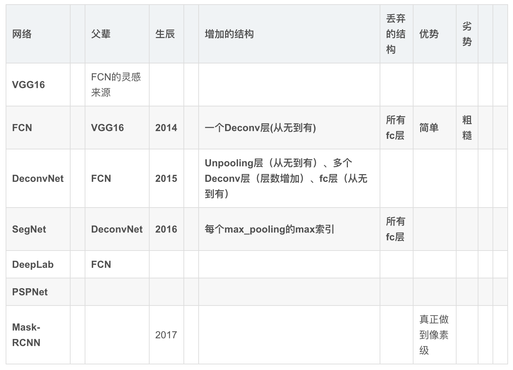

按分割目的划分
普通分割
将不同分属不同物体的像素区域分开。
如前景与后景分割开，狗的区域与猫的区域与背景分割开。语义分割
在普通分割的基础上，分类出每一块区域的语义（即这块区域是什么物体）。
如把画面中的所有物体都指出它们各自的类别。实例分割
在语义分割的基础上，给每个物体编号。
如这个是该画面中的狗A，那个是画面中的狗B。
CNN图像语义分割一般流程：
- 下采样+上采样：Convlution + Deconvlution／Resize
- 多尺度特征融合：特征逐点相加／特征channel维度拼接
- 获得像素级别的segement map：对每一个像素点进行判断类别
图像分割网络结构比较

总结
- FCN更像一种技巧。随着基本网络（如VGG， ResNet）性能的提升而不断进步。
- 深度学习+概率图模型（PGM）是一种趋势。其实DL说白了就是进行特征提取，而PGM能够从数学理论很好的解释事物本质间的联系。
- 概率图模型的网络化。因为PGM通常不太方便加入DL的模型中，将PGM网络化后能够是PGM参数自学习，同时构成end-to-end的系统。
资源
入门学习
- A 2017 Guide to Semantic Segmentation with Deep Learning 概述——用深度学习做语义分割
- 从全卷积网络到大型卷积核：深度学习的语义分割全指南
- Fully Convolutional Networks
- 语义分割中的深度学习方法全解：从FCN、SegNet到各代DeepLab
- 图像语义分割之FCN和CRF
- 从特斯拉到计算机视觉之「图像语义分割」
- 计算机视觉之语义分割
- Segmentation Results: VOC2012 PASCAL语义分割比赛排名
进阶论文
- U-Net [https://arxiv.org/pdf/1505.04597.pdf]
- SegNet [https://arxiv.org/pdf/1511.00561.pdf]
- DeepLab [https://arxiv.org/pdf/1606.00915.pdf]
- FCN [https://arxiv.org/pdf/1605.06211.pdf]
- ENet [https://arxiv.org/pdf/1606.02147.pdf]
- LinkNet [https://arxiv.org/pdf/1707.03718.pdf]
- DenseNet [https://arxiv.org/pdf/1608.06993.pdf]
- Tiramisu [https://arxiv.org/pdf/1611.09326.pdf]
- DilatedNet [https://arxiv.org/pdf/1511.07122.pdf]
- PixelNet [https://arxiv.org/pdf/1609.06694.pdf]
- ICNet [https://arxiv.org/pdf/1704.08545.pdf]
- ERFNet [http://www.robesafe.uah.es/personal/eduardo.romera/pdfs/Romera17iv.pdf]
- RefineNet [https://arxiv.org/pdf/1611.06612.pdf]
- PSPNet [https://arxiv.org/pdf/1612.01105.pdf]
- CRFasRNN [http://www.robots.ox.ac.uk/%7Eszheng/papers/CRFasRNN.pdf]
- Dilated convolution [https://arxiv.org/pdf/1511.07122.pdf]
- DeconvNet [https://arxiv.org/pdf/1505.04366.pdf]
- FRRN [https://arxiv.org/pdf/1611.08323.pdf]
- GCN [https://arxiv.org/pdf/1703.02719.pdf]
- DUC, HDC [https://arxiv.org/pdf/1702.08502.pdf]
- Segaware [https://arxiv.org/pdf/1708.04607.pdf]
- Semantic Segmentation using Adversarial Networks [https://arxiv.org/pdf/1611.08408.pdf]
综述
- A Review on Deep Learning Techniques Applied to Semantic Segmentation Alberto Garcia-Garcia, Sergio Orts-Escolano, Sergiu Oprea, Victor Villena-Martinez, Jose Garcia-Rodriguez 2017
- Computer Vision for Autonomous Vehicles: Problems, Datasets and State-of-the-Art
- 基于内容的图像分割方法综述 姜 枫 顾 庆 郝慧珍 李 娜 郭延文 陈道蓄 2017
Tutorial
- Semantic Image Segmentation with Deep Learning
- A 2017 Guide to Semantic Segmentation with Deep Learning
- Image Segmentation with Tensorflow using CNNs and Conditional Random Fields
视频教程
- CS231n: Convolutional Neural Networks for Visual Recognition Lecture 11 Detection and Segmentation
- Machine Learning for Semantic Segmentation - Basics of Modern Image Analysis
代码
Semantic segmentation
- U-Net (https://arxiv.org/pdf/1505.04597.pdf)
- https://lmb.informatik.uni-freiburg.de/people/ronneber/u-net/ (Caffe - Matlab)
- https://github.com/jocicmarko/ultrasound-nerve-segmentation (Keras)
- https://github.com/EdwardTyantov/ultrasound-nerve-segmentation(Keras)
- https://github.com/ZFTurbo/ZF_UNET_224_Pretrained_Model (Keras)
- https://github.com/yihui-he/u-net (Keras)
- https://github.com/jakeret/tf_unet (Tensorflow)
- https://github.com/DLTK/DLTK/blob/master/examples/Toy_segmentation/simple_dltk_unet.ipynb (Tensorflow)
- https://github.com/divamgupta/image-segmentation-keras (Keras)
- https://github.com/ZijunDeng/pytorch-semantic-segmentation (PyTorch)
- https://github.com/akirasosa/mobile-semantic-segmentation (Keras)
- https://github.com/orobix/retina-unet (Keras)
- SegNet (https://arxiv.org/pdf/1511.00561.pdf)
- https://github.com/alexgkendall/caffe-segnet (Caffe)
- https://github.com/developmentseed/caffe/tree/segnet-multi-gpu (Caffe)
- https://github.com/preddy5/segnet (Keras)
- https://github.com/imlab-uiip/keras-segnet (Keras)
- https://github.com/andreaazzini/segnet (Tensorflow)
- https://github.com/fedor-chervinskii/segnet-torch (Torch)
- https://github.com/0bserver07/Keras-SegNet-Basic (Keras)
- https://github.com/tkuanlun350/Tensorflow-SegNet (Tensorflow)
- https://github.com/divamgupta/image-segmentation-keras (Keras)
- https://github.com/ZijunDeng/pytorch-semantic-segmentation (PyTorch)
- https://github.com/chainer/chainercv/tree/master/examples/segnet(Chainer)
- https://github.com/ykamikawa/keras-SegNet (Keras)
- DeepLab (https://arxiv.org/pdf/1606.00915.pdf)
- https://bitbucket.org/deeplab/deeplab-public/ (Caffe)
- https://github.com/cdmh/deeplab-public (Caffe)
- https://bitbucket.org/aquariusjay/deeplab-public-ver2 (Caffe)
- https://github.com/TheLegendAli/DeepLab-Context (Caffe)
- https://github.com/msracver/Deformable-ConvNets/tree/master/deeplab(MXNet)
- https://github.com/DrSleep/tensorflow-deeplab-resnet (Tensorflow)
- https://github.com/muyang0320/tensorflow-deeplab-resnet-crf(TensorFlow)
- https://github.com/isht7/pytorch-deeplab-resnet (PyTorch)
- https://github.com/bermanmaxim/jaccardSegment (PyTorch)
- https://github.com/martinkersner/train-DeepLab (Caffe)
- https://github.com/chenxi116/TF-deeplab (Tensorflow)
- FCN (https://arxiv.org/pdf/1605.06211.pdf)
- https://github.com/vlfeat/matconvnet-fcn (MatConvNet)
- https://github.com/shelhamer/fcn.berkeleyvision.org (Caffe)
- https://github.com/MarvinTeichmann/tensorflow-fcn (Tensorflow)
- https://github.com/aurora95/Keras-FCN (Keras)
- https://github.com/mzaradzki/neuralnets/tree/master/vgg_segmentation_keras (Keras)
- https://github.com/k3nt0w/FCN_via_keras (Keras)
- https://github.com/shekkizh/FCN.tensorflow (Tensorflow)
- https://github.com/seewalker/tf-pixelwise (Tensorflow)
- https://github.com/divamgupta/image-segmentation-keras (Keras)
- https://github.com/ZijunDeng/pytorch-semantic-segmentation (PyTorch)
- https://github.com/wkentaro/pytorch-fcn (PyTorch)
- https://github.com/wkentaro/fcn (Chainer)
- https://github.com/apache/incubator-mxnet/tree/master/example/fcn-xs(MxNet)
- https://github.com/muyang0320/tf-fcn (Tensorflow)
- https://github.com/ycszen/pytorch-seg (PyTorch)
- https://github.com/Kaixhin/FCN-semantic-segmentation (PyTorch)
- ENet (https://arxiv.org/pdf/1606.02147.pdf)
- LinkNet (https://arxiv.org/pdf/1707.03718.pdf)
- https://github.com/e-lab/LinkNet (Torch)
- DenseNet (https://arxiv.org/pdf/1608.06993.pdf)
- Tiramisu (https://arxiv.org/pdf/1611.09326.pdf)
- DilatedNet (https://arxiv.org/pdf/1511.07122.pdf)
- PixelNet (https://arxiv.org/pdf/1609.06694.pdf)
- ICNet (https://arxiv.org/pdf/1704.08545.pdf)
- https://github.com/hszhao/ICNet (Caffe)
- ERFNet (http://www.robesafe.uah.es/personal/eduardo.romera/pdfs/Romera17iv.pdf)
- RefineNet (https://arxiv.org/pdf/1611.06612.pdf)
- https://github.com/guosheng/refinenet (MatConvNet)
- PSPNet (https://arxiv.org/pdf/1612.01105.pdf)
- CRFasRNN (http://www.robots.ox.ac.uk/%7Eszheng/papers/CRFasRNN.pdf)
- Dilated convolution (https://arxiv.org/pdf/1511.07122.pdf)
- DeconvNet (https://arxiv.org/pdf/1505.04366.pdf)
- FRRN (https://arxiv.org/pdf/1611.08323.pdf)
- https://github.com/TobyPDE/FRRN (Lasagne)
- GCN (https://arxiv.org/pdf/1703.02719.pdf)
- DUC, HDC (https://arxiv.org/pdf/1702.08502.pdf)
- Segaware (https://arxiv.org/pdf/1708.04607.pdf)
- Semantic Segmentation using Adversarial Networks (https://arxiv.org/pdf/1611.08408.pdf)
Instance aware segmentation
- FCIS [https://arxiv.org/pdf/1611.07709.pdf]
- https://github.com/msracver/FCIS [MxNet]
- MNC [https://arxiv.org/pdf/1512.04412.pdf]
- DeepMask [https://arxiv.org/pdf/1506.06204.pdf]
- SharpMask [https://arxiv.org/pdf/1603.08695.pdf]
- Mask-RCNN [https://arxiv.org/pdf/1703.06870.pdf]
- https://github.com/CharlesShang/FastMaskRCNN [Tensorflow]
- https://github.com/jasjeetIM/Mask-RCNN [Caffe]
- https://github.com/TuSimple/mx-maskrcnn [MxNet]
- https://github.com/matterport/Mask_RCNN [Keras]
- RIS [https://arxiv.org/pdf/1511.08250.pdf]
- https://github.com/bernard24/RIS [Torch]
- FastMask [https://arxiv.org/pdf/1612.08843.pdf]
Satellite images segmentation
- https://github.com/mshivaprakash/sat-seg-thesis
- https://github.com/KGPML/Hyperspectral
- https://github.com/lopuhin/kaggle-dstl
- https://github.com/mitmul/ssai
- https://github.com/mitmul/ssai-cnn
- https://github.com/azavea/raster-vision
- https://github.com/nshaud/DeepNetsForEO
- https://github.com/trailbehind/DeepOSM
Video segmentation
Autonomous driving
- https://github.com/MarvinTeichmann/MultiNet
- https://github.com/MarvinTeichmann/KittiSeg
- https://github.com/vxy10/p5_VehicleDetection_Unet [Keras]
- https://github.com/ndrplz/self-driving-car
- https://github.com/mvirgo/MLND-Capstone
Annotation Tools:
- https://github.com/AKSHAYUBHAT/ImageSegmentation
- https://github.com/kyamagu/js-segment-annotator
- https://github.com/CSAILVision/LabelMeAnnotationTool
- https://github.com/seanbell/opensurfaces-segmentation-ui
- https://github.com/lzx1413/labelImgPlus
- https://github.com/wkentaro/labelme
Datasets
- Stanford Background Dataset[http://dags.stanford.edu/projects/scenedataset.html]
- Sift Flow Dataset[http://people.csail.mit.edu/celiu/SIFTflow/]
- Barcelona Dataset[http://www.cs.unc.edu/~jtighe/Papers/ECCV10/]
- Microsoft COCO dataset[http://mscoco.org/]
- MSRC Dataset[http://research.microsoft.com/en-us/projects/objectclassrecognition/]
- LITS Liver Tumor Segmentation Dataset[https://competitions.codalab.org/competitions/15595]
- KITTI[http://www.cvlibs.net/datasets/kitti/eval_road.php]
- Stanford background dataset[http://dags.stanford.edu/projects/scenedataset.html]
- Data from Games dataset[https://download.visinf.tu-darmstadt.de/data/from_games/]
- Human parsing dataset[https://github.com/lemondan/HumanParsing-Dataset]
- Silenko person database[https://github.com/Maxfashko/CamVid]
- Mapillary Vistas Dataset[https://www.mapillary.com/dataset/vistas]
- Microsoft AirSim[https://github.com/Microsoft/AirSim]
- MIT Scene Parsing Benchmark[http://sceneparsing.csail.mit.edu/]
- COCO 2017 Stuff Segmentation Challenge[http://cocodataset.org/#stuff-challenge2017]
- ADE20K Dataset[http://groups.csail.mit.edu/vision/datasets/ADE20K/]
- INRIA Annotations for Graz-02[http://lear.inrialpes.fr/people/marszalek/data/ig02/]
比赛
- MSRC-21 [http://rodrigob.github.io/are_we_there_yet/build/semantic_labeling_datasets_results.html]
- Cityscapes [https://www.cityscapes-dataset.com/benchmarks/]
- VOC2012 [http://host.robots.ox.ac.uk:8080/leaderboard/displaylb.php?challengeid=11&compid=6]
领域专家
- Jonathan Long
- Liang-Chieh Chen
- Hyeonwoo Noh
- Bharath Hariharan
- Fisher Yu
- Vijay Badrinarayanan
- Guosheng Lin